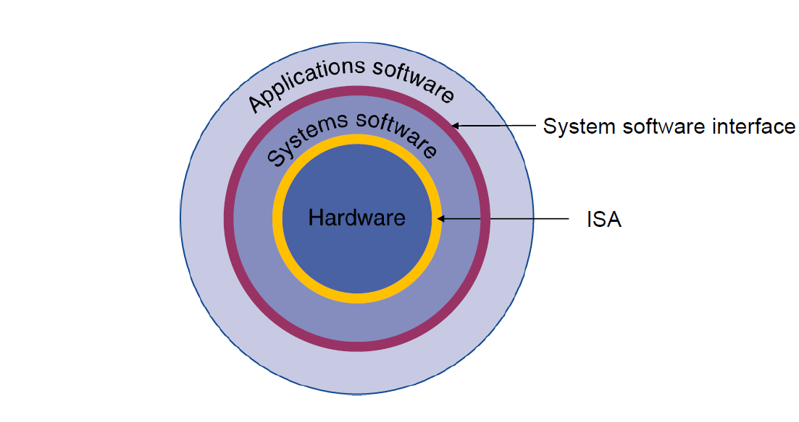
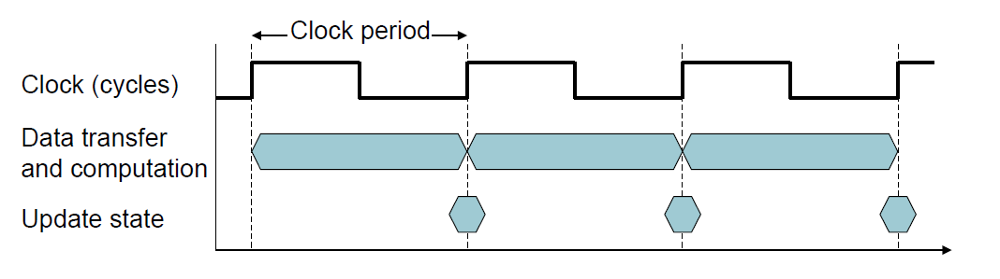

Computer Abstractions and Technology
Abstractions architecture

ISA: Instruction set architecture (The hardware/software interface)
Trade-off
Power Trends
Power=Capacitiveload×Voltage2×Frequency
Integrated Circuit Cost
Costperdie=Diesperwafer∗YieldCostperwafer
Diesperwafer≈DieareaWaferarea
Yield=(1+(Defectsperarea∗Diearea/2))21
Performance=ExecutionTime1
e.g. X is n time faster than Y
PerformanceYPerformanceX=ExecutiontimeXExecutiontimeY=n
Response Time and Throughput
- Response time(Elapsed time): The time it takes to do a task（要完成一件工作，所需花費的時間）
- including all aspects (Processing, I/O, OS overhead, idle time)
- Determines system performance
- Throughput: Total work done per unit time（在一定時間內，所能完成的工作量）
- e.g., tasks/transactions/… per hour
CPU Clocking

- Clock period: duration of a clock cycle（一個 Cycle 花費的時間）
- e.g., 250ps = 0.25ns = 250×10 –12 s
- Clock frequency (rate): cycles per second（一秒幾個 Cycle）
- e.g., 4.0GHz = 4000MHz = 4.0×10 9 Hz
CPU time
CPU處理給定的工作所花費的時間 (Discounts I/O time, other jobs’ shares)
CPUTime=ClockCycles×ClockCycleTime=ClockRateCPUClockCycles
公式理解：處理工作時走了幾個 Cycle 乘上每走一個 Cycle 所要花費的時間
- Performance improved by
- Reducing number of clock cycles
- Increasing clock rate
- Hardware designer must often trade off clock rate against cycle count
Cycles per Instruction (CPI)
每執行一個指令(Instruction)，所要花費的 Cycle
ClockCycles=InstructionCount×CyclesperInstruction
- Instruction Count for a program
- Determined by program, ISA and compiler
- Average cycles per instruction
- Determined by CPU hardware
CPU Time 可以改寫為：
CPUTime=InstructionCount×CPI×ClockCycleTime=ClockRateInstructionCount×CPI
If different instruction classes take different numbers of cycles
ClockCycles=i=1∑n(CPIi×InstructionCounti)
Weighted average CPI
CPI=InstructionCountClockCycles=i=1∑n(InstructionCountCPIi×InstructionCounti)
CPI=ProgramInstructions×InstructionClockcycles×ClockcycleSeconds
- Performance depends on
- Algorithm: affects IC, possibly CPI
- Programming language: affects IC, CPI
- Compiler: affects IC, CPI
- Instruction set architecture: affects IC, CPI, Tc
Improving an aspect of a computer and expecting a proportional improvement in overall performance
Timproved=ImprovementfactorTaffected+Tunaffected
MIPS
Millions of Instructions Per Second
MIPS=Executiontime×106Instructioncount=ClockrateInstructioncount×CPI×106Instructioncount=CPI×106Clockrate
ps: MIPS無法拿來當作電腦效能的依據（因為沒有考慮到 Instruction Count）